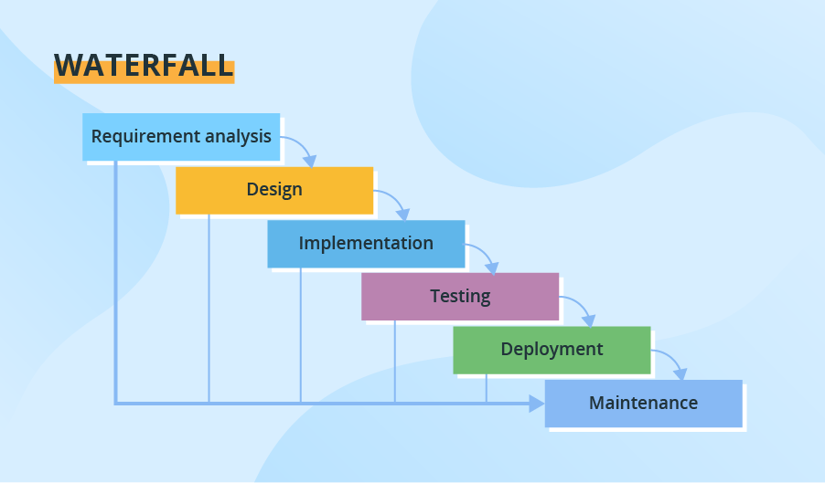
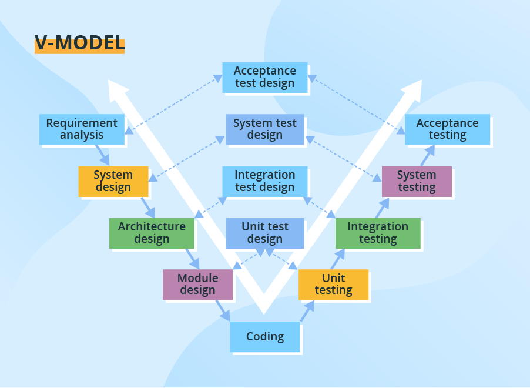
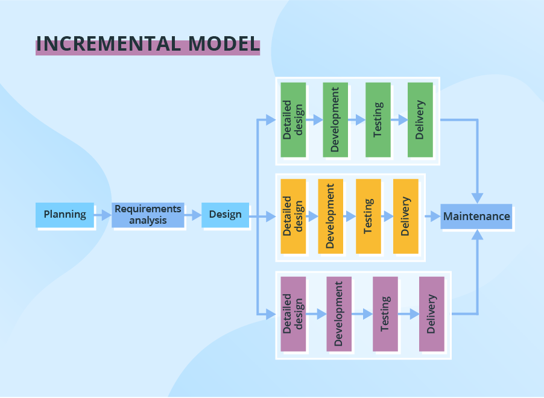
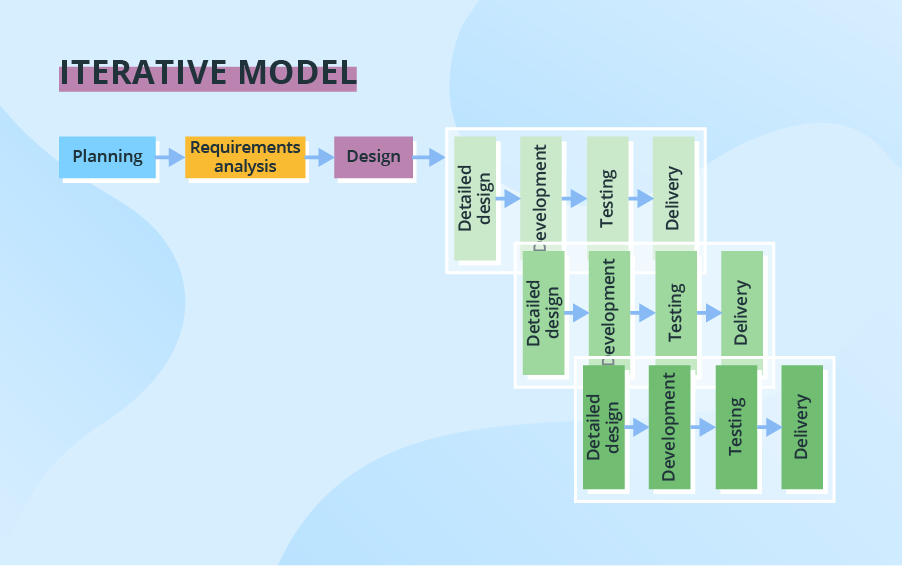
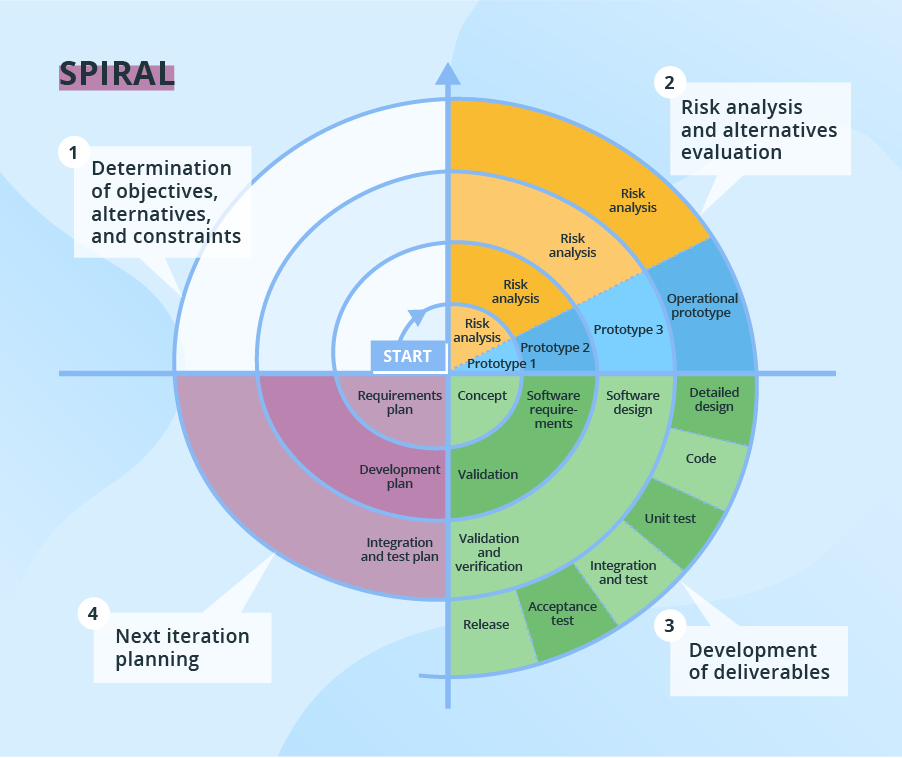
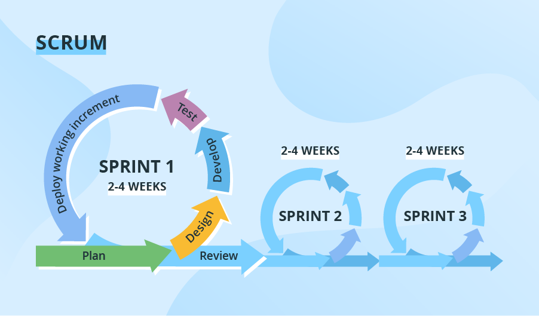
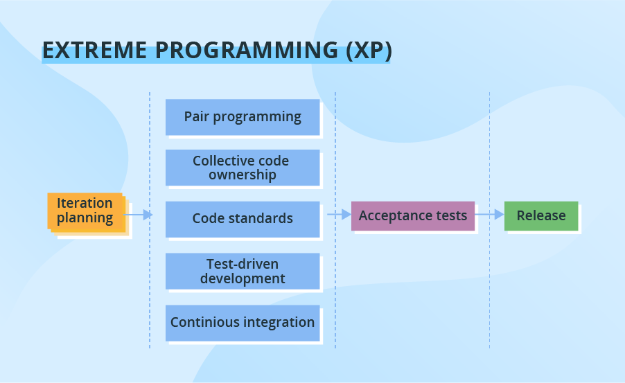

Introduction to Software Engineering
Software Engineering
(for Intelligent Distributed Systems)
Module “Principles and Methods”
A.Y. 2023/2024
Giovanni Ciatto
Compiled on: 2024-02-20 — printable version
Relevant nomenclature (pt. 1)
Computer Science (CS) is the study of computation, i.e. the automatic manipulation of information via algorithms
(intuitive definition provided by the teacher)
An algorithm is a finite set of well-defined rules for the solution of a problem in a finite number of steps
(from IEEE Standard Glossary)
Relevant nomenclature (pt. 2)
A problem is a well-defined specification of an information to be produced (output) starting from some initial information or preconditions (input)
(intuitive definition provided by the teacher)
- e.g. finding the shortest path between two a source
Sand a destinationDin a graph - e.g. computing ingredients quantities a
T-jam flavored cheesecake forNguests - e.g. generating an aggregate report of sales given a database of transactions
Relevant nomenclature (pt. 3)

-
A process is any operation aimed at transforming input into output when solving a problem
- it may leverage some storage (e.g. to store of intermediate results)
-
When both input and output are data, and the process is automatic, we are talking about computation
-
Algorithms are a way to express computation in a formal way
- formal $\approx$ unambiguous, precise, rigorous (i.e. such that a machine can reproduce the process, precisely)
- that machine is a computer
- formal $\approx$ unambiguous, precise, rigorous (i.e. such that a machine can reproduce the process, precisely)
-
Algorithms can be studied independently of the machine which executes them
- e.g. to understand their properties, limitations, theoretical costs
What is computer science essentially about
-
Defining algorithms as recipes for processing interesting problems
- requires clear representations for input / output / storage data
-
Studying algorithms’ time/memory requirements, formally
- as well as their termination
-
Algorithms can be combined to solve more complex problems
Example: sorting algorithm (Bubble sort)
Input: array of comparable items- several algorithms to compare items
- depending on items type
- several algorithms to compare items
Output: sorted array- according to comparison strategy
- Many algorithms with different properties
- e.g. bubble sort
Let’s recall the big picture (pt. 1)
Why do people care about algorithms in the first place?
-
Put it simply, most people don’t really care about algorithms per se
-
They care about automating the solutions to problems
- most commonly quicker, more precise, less error-prone than humans
- (when the problem is repetitive and structured enough)
- most commonly quicker, more precise, less error-prone than humans
-
Hence, computers are enablers for automation
- and algorithms are the strategies followed by computers to solve problems
-
However, not all problems are as simple as ordering an array
- most real-world problems are complex, multi-faceted, and ambiguous
-
Effort and creativity is required to understand how to
- decompose real-world problems into simpler ones
- select the right algorithms to solve them
- combine algorithms to solve the original problem
- instruct a computer to do all such stuff
More nomenclature (pt. 1)
(from IEEE Standard Glossary)
Software: computer programs, procedures, and possibly associated documentation and data pertaining to the operation of a computer system
- Software $\supset$ algorithms (software is more general than algorithms)
- all algorithms can be expressed in software
- not all software is expressing algorithms
- e.g. there are programs which are not meant to terminate (OS, web servers, etc.)
More nomenclature (pt. 2)
(from IEEE Standard Glossary)
Software Engineering (SE) definition:
(1) The application of a systematic, disciplined, quantifiable approach to the development, operation, and maintenance of software; that is, the application of engineering to software.
(2) The study of approaches as in (1).
-
Focus on the development of a software product …
- i.e. something which needs to meet requirements
-
… and on the process of developing it
- i.e. making the process reproducible, sustainable, and maintainable
Let’s recall the big picture (pt. 2)
-
Demand is for automation of solutions to problems
-
Supply is for products which do that by means of
- computers (hardware), as produced by electronic engineering …
- running software, as produced by software engineering
-
Computer engineering mostly focuses on creating general-purpose computers
- i.e. computers which can be instructed to solve any problem
- (given the right software)
- i.e. computers which can be instructed to solve any problem
-
Software engineering mostly focuses on creating specific-purpose software
- i.e. software which solves a particular set of problems
- (when run on a general purpose computer)
- i.e. software which solves a particular set of problems
What is software engineering essentially about (pt. 1)
-
Studying how to realise software products which meets customers’ requirements
- customers $\approx$ the stakeholders seeking for automatic solutions to problems
- requirements $\approx$ description about what problems should be solved + constraints about how
-
As the goal is a product…
- … success is measured in terms of requirements satisfaction
- i.e. whether the products is effective / efficient w.r.t. the requirements
- … a notion of product lifecycle is inherently present
- from requirements specification to implementation, and beyond
- there including validation, and maintenance
- from requirements specification to implementation, and beyond
- … success is measured in terms of requirements satisfaction
What is software engineering essentially about (pt. 2)
-
As it is an engineering discipline, optimization of the development process is a key concern
- mostly because demand will evolve and requirements will change
- and nobody wants to restart development from scratch
- also because the product will need to be maintained over time
- and it is boring and costly to maintain the software
- also because optimising development can, on the long run,
- reduce the cost of the product
- increase the quality of the product
- reduce the time to market of novel features / products
- mostly because demand will evolve and requirements will change
-
Software development should be reproducible, sustainable, evolvable, maintainable, and scalable
- reproducible $\approx$ repeatable, with predictable outcomes
- sustainable $\approx$ it’s possible to timely satisfy requirements with controllable costs and efforts
- evolvable $\approx$ it’s possible to adapt the product to new requirements in a sustainable way
- maintainable $\approx$ it’s possible to fix, improve, or just keep the product alive in a sustainable way
- scalable $\approx$ it’s possible to grow the product in terms of size, complexity, and features in a sustainable way
Why is software engineering relevant?
-
Software is everywhere
- from smartphones to cars, from fridges to toasters, from banks to hospitals, from schools to governments, from entertainment to science, from industry to agriculture
-
Software is a strange sort of product
- it’s intangible, invisible, and weightless; most people don’t really understand how it works, internally
- zero marginal cost: the cost of producing more one product unit is negligible
- most of the cost is in the conception, development and maintenance of the product
-
Some software products may also come with:
- infrastructural costs (e.g. servers, networks, licenses, energy, cooling, etc.)
- operational costs (e.g. people operating the servers, networks, etc.)
-
Most cost entries are (directly or indirectly) personnel costs
- personnel must be creative, knowledgeable, disciplined, motivated, and coordinated
- performance is not really proportional to the amount of person-time spent
- personnel must be creative, knowledgeable, disciplined, motivated, and coordinated
-
Misunderstanding these aspects can lead to software crises
About software crises
(from Wikipedia: “Software crisis” and “History of software engineering”)
-
Software crisis is a term used in the early days of CS (1960s, 1970s, and 1980s)
-
It refers to the difficulty of delivering useful and efficient software on time and within budget
-
Software crises recurred several times, as the computational power of computers increased (cf. Moore’s Law)
- due to the mismatch among the complexity of the software…
- … and the inadequacy of the methods used to develop it
-
Common issues:
- projects running over-budget or over-time
- software was very inefficient or low-quality
- software often did not meet requirements
- projects were unmanageable and code difficult to maintain
- software was never delivered
In your opinion…
- what makes software development costs rise?
- what may delay software development?
- why could software miss requirements?
- why may software be inefficient?
- what does it mean for software to be of low-quality?
- what makes code (un)manageable or (un)maintainable?
Hopefully, you will have clear answers to these questions by the end of this course
Why is software engineering relevant for Digital Transformation?
-
Should you become managers or entrepreneurs in the future, you will need to:
- plan and supervise software projects
- understand explicit and implicit costs of software development
- communicate with technical personnel
- understand not only the result but also the process of software development
-
Should you be in charge of realising the digital transformation in some organization, you will need to:
- indentify where automation can add value to the organization
- detect ill-defined development processes and how to improve them
- be up to date with state-of-the-art software development practices
- be able to interpret requirements and translate them into a software design
-
Should you be involved in the practical exploitation of software engineering, you will need to:
- understand what you’re doing, and why
- be knowleadgeable about how to do it
- be able to communicate with management, technical, commercial personnel
What are you expected to learn in this course
The focus is not on coding skills
Yet, you’ll be exposed to some coding exercises,
in order for you to experience first-hand the challenges of software development
Goals
- understand the process of software development
- clearly understand what is the purpose of each phase of the process
- understand where costs and efforts come from
- being (in principle) able to plan and supervise a software project
- understand technical jargon and communicate with technical personnel
Overview on software engineering phases
(A few spoilers about the course, just to give you the full picture)
Software engineering phases (pt. 1)
-
Use case collection: negotiate expectations with customer(s) or stakeholders
- output: a set of user stories
-
Requirements analysis: produce a list of requirements the final product should satisfy
- requirement $\approx$ description about what problems should be solved + constraints about how
- for each requirement, a clear and unambiguous acceptance crierion should be defined
- priorities and weights may be assigned to requirements
Software engineering phases (pt. 2)
-
Design: produce a blueprint of the software
- modelling: what entities from the real world are represented in the software?
- how do they behave? how do they interact?
- architecture: how is the software organised?
- what are the components? how do they communicate over the network?
- modelling: what entities from the real world are represented in the software?
-
Implementation: write the code that reifies the design into software
-
Verification: verify that the software meets the requirements
- automated testing: write more code to check whether the aforementioned implementation code works
- acceptance testing: test the system with real data and real users
Software engineering phases (pt. 3)
-
Release: make one particular version of the software available to the customers
- most commonly, publish the software package on a server and make it accessible via the web
-
Deployment: install and activate the software for the software
- e.g. installer for desktop software, or mobile apps
- e.g. continous deployment for web services
-
Documentation: produce manuals and guides for the software
- user manual: how to use the software
- developer manual: how to manipualte the software code base
-
Maintenance: fix bugs, improve the software, adapt it to new requirements
- potentially reiterate the whole process
Common misconception about SE phases
-
As the phases are often presented in an orderly fashion…
- … it is easy to think that they are sequential and non-overlapping
- this is false
- … it is easy to think that they are sequential and non-overlapping
-
In practice:
- the process of software development is iterative
- i.e. it is repeated over and over again
- phases may overlap and interleave
- e.g. requirements may change during implementation
- e.g. verification may reveal design flaws
- e.g. maintenance may require re-design
- the process of software development is iterative
-
Most notably, verification may start before implementation
- it’s better to have verification procedure in place before writing code
- so thay they can guide the implementation process
-
Different lifecycle models exist in the SE literature, governing the order and interleaving of phases
SE Lifecycle Models Overview (pt. 1)

Phases are sequential despite partially overlapping
SE Lifecycle Models Overview (pt. 2)

Still sequential, but with interleaved verification phases
SE Lifecycle Models Overview (pt. 3)

Starting from an abstract design, a number of iterations are perfomed, one per module
SE Lifecycle Models Overview (pt. 4)

Design and subsequent phases are repeated over and over again, for refinement
SE Lifecycle Models Overview (pt. 5)

Focus on risk analysis, whihc is performed at each iteration
SE Lifecycle Models Overview (pt. 6)

Most famous model for agile development.
The goal is balance time to market with agile reactivity to requirements changes.
SE Lifecycle Models Overview (pt. 7)

Focus on the delivery of working software in short time frames.
Attempts to mitigate the consequnet risk of low-quality code.
In the remainder of this course
-
We will describe the many activities involved in each phase
- encompassing phases one by one
- following a bottom-up approach
-
In this module, will focus on most technical aspects of SE…
- i.e. the implementation, validation, release, deployment, maintenance phases
-
… the next module will focus on most conceptual aspects of SE
- from use-case colletion to design
Rationale: grasping conceptual aspects is easier when you have a clear idea of the underlying technical aspects